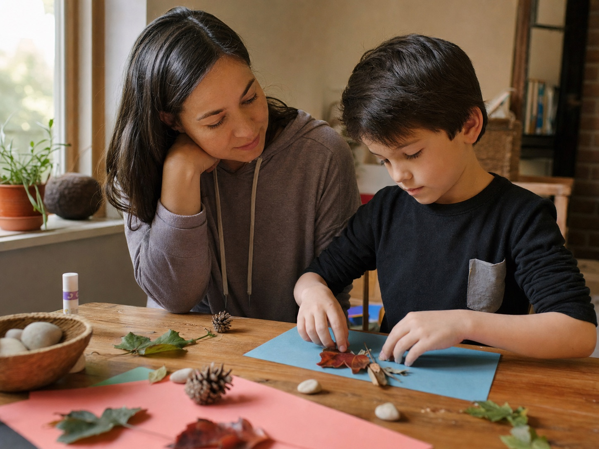

Return to core practices
Revisit approaches children already encountered in Children’s Workshop I or II, with time to practise and settle them.
A steady weekly Zoom space for children to revisit what they have learned, practise with guidance, and bring questions from practice and everyday life.
Each live session makes room for familiar techniques, thoughtful new practices, and practical guidance. This is a continuation space—not an introductory workshop.
Revisit approaches children already encountered in Children’s Workshop I or II, with time to practise and settle them.
Receive age-appropriate new practices and reflective prompts that build on the existing foundation.
Children can receive guidance around their practice and the everyday situations they are navigating.
A consistent weekly rhythm supports integration between sessions and a deeper relationship with the work.

Please have a blindfold, water, and the child’s home-practice set ready before the session begins.
Weekly practice is ongoing. If your child has completed Children’s Workshop I or II, contact us to confirm the next available start date, session time and enrolment options before committing. Please leave your child’s personal details out of the initial enquiry.
It is exclusively for children who have already completed Children’s Workshop I or Children’s Workshop II with Rainbow Sanctuary.
Ask us about the next available cycle to confirm dates and times in your time zone.
A parent or guardian contacts Rainbow Sanctuary first. The team will explain the schedule and enrolment options.
Please prepare a blindfold, water, and the home-practice set. Guardians remain responsible for a suitable, supported environment for their child.